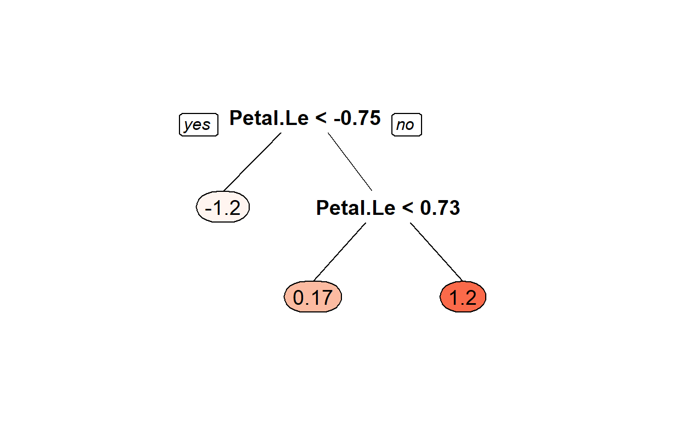
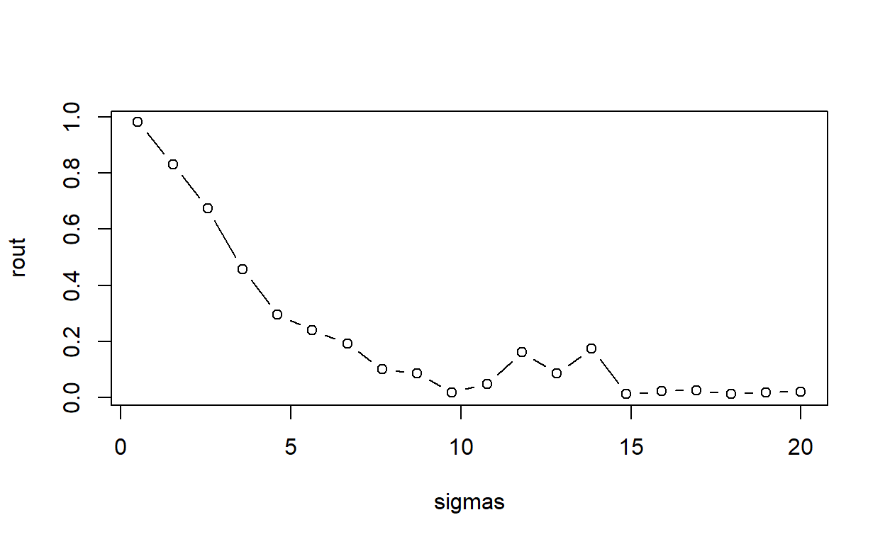
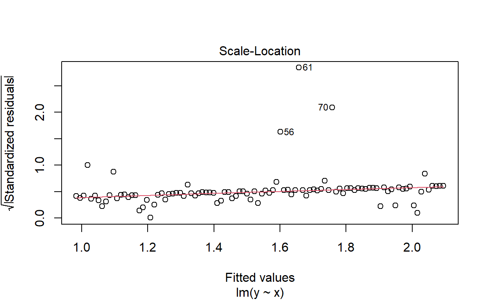
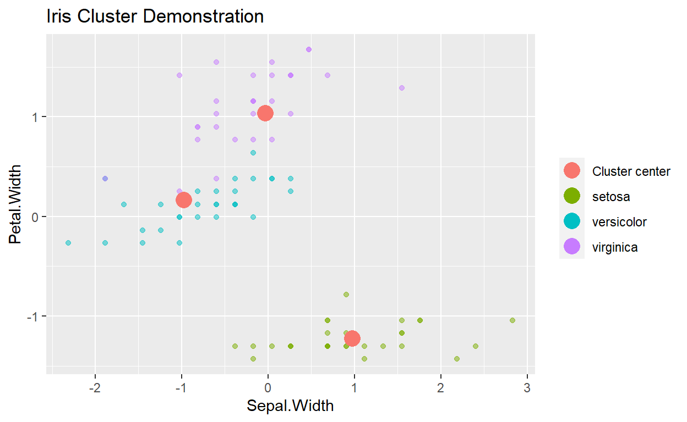

Game Plan
This module provides the basis for the rest of the course by introducing the basic concepts behind machine learning, and, specifically, how to perform machine learning by using RStudio and the CARET R package. First, you will learn how machine learning and artificial intelligence are disrupting businesses. Next, you will learn about the basic types of machine learning and how to leverage these algorithms in a R script. Third, you will learn how linear regression can be considered a machine learning problem with parameters that must be determined computationally by minimizing a cost function. Finally, you will learn about neighbor-based algorithms, including the k-nearest neighbor algorithm, which can be used for both classification and regression tasks.
Objectives
By the end of this module, you should be able to:
articulate the different types of machine learning algorithms and provide examples where each type might be applied within the Accounting profession,
describe the challenges in cleaning and pre-processing data,
apply the Caret Package to perform basic machine learning tasks,
understand the importance of a cost function and the importance of minimizing this functions,
perform general linear regression by using the Caret Package, and
apply the k-nearest neighbor algorithm for both classification and regression tasks.
Artificial Intelligence and Accountancy
This lesson explores the fundamentals of machine learning and artificial intelligence and how these tools are being used in accountancy and business in general.
Interesting Articles
How is accountancy and finance world using artificial intelligence
What is the growing role artificial intelligence (and by association, machine learning) play in modern accounting?
What does the impact technology plays in shaping careers in modern accountancy?
How is artificial intelligence impacting financial auditing?
Introduction to Machine Learning1

Your most important skill will be your ability to translate data into insights that are clear and meaningful to a stakeholder.
The Four Types of Data Analysis are:
1. Descriptive Analytics: What is happening?
This is the most common of all forms. In business, it provides the analyst with a view of key metrics and measures within the company.
An example of this could be a monthly profit and loss statement. Similarly, an analyst could have data on a large population of customers. Understanding demographic information on their customers (e.g.30% of our customers are self-employed) would be categorised as descriptive analytics. Utilising useful visualisation tools enhances the message of descriptive analytics.
2. Diagnostic Analytics: Why is it happening?
This is the next step in complexity in data analytics is descriptive analytics. On the assessment of the descriptive data, diagnostic analytical tools will empower an analyst to drill down and in so doing isolate the root-cause of a problem.
Well-designed business information (BI) dashboards incorporating reading of time-series data (i.e.data over multiple successive points in time) and featuring filters and drill down capability allow for such analysis.
3. Predictive Analytics: What is likely to happen?
Predictive analytics is all about forecasting. Whether its the likelihood of an event happening in future, forecasting a quantifiable amount or estimating a point in time at which something might happen - these are all done through predictive models.
Predictive models typically utilise a variety of variable data to make the prediction. The variability of the component data will have a relationship with what it is likely to predict (e.g.the older a person, the more susceptible they are to a heart-attack we would say that age has a linear correlation with heart-attack risk). These data are then compiled together into a score or prediction.
In a world of significant uncertainty, being able to predict allows one to make better decisions. Predictive models are some of the most important utilised across many fields.
4. Prescriptive Analytics: What do I need to do?
The next step up regarding value and complexity is the prescriptive model. The prescriptive model utilises an understanding of what has happened, why it has happened and a variety of what-might-happen analysis to help the user determine the best course of action to take. A prescriptive analysis is typically not just with one individual response but is, in fact, a host of other actions.
An excellent example of this is a traffic application helping you choose the best route home and taking into account the distance of each route, the speed at which one can travel on each road and, crucially, the current traffic constraints.
Another example might be producing an exam time-table such that no students have clashing schedules.
Getting our hands dirty
As a field, machine learning is both expansive and mathematically complex. From deriving simple linear relationships via regression analysis to finding clusters of data points in an N-dimensional space; statistical and machine learning techniques can take years to fully master. However, given the short time available in this course, we will take the simpler approach of demonstrating several commonly used approaches in order to both introduce the fundamental concepts in machine learning and the methodology we will use in RStudio to apply these concepts to actual data. For the latter, we will use the standard machine learning library in R, which is the Caret Package.
We will demonstrate the four main tasks of machine learning: classification, regression, dimensional reduction, and clustering. Note that this module is simply an introduction to these topics, we will explore these and other areas in more detail throughout this course. Finally, we will discuss how to persist machine learning models.
Set up
Make sure you have the caret package installed.
install.packages("caret")
Run your libraries
The first steps in any data analytics effort, once the business goal has been defined, are to understand and prepare the data of interest. For example, the Cross Industry Standard Process for Data Mining or (CRISP-DM) starts with the Business Understanding step, immediately followed by the Data Understanding and Data Preparation steps. For machine learning analyses, these latter two steps require loading the data into our notebook, exploring the data either systematically or in a cumulative sense to understand the typical features for different instances. We also can generate descriptive statistical summaries and visualizations, such as a pair plot, to understand the data in full. Finally, we will need to clean the data to properly account for missing data, data that are incomplete or formatted incorrectly, or to generate meta-features (such as a date-time) from existing features.

For this module, we will focus on a single, simple data set, the standard Iris dataset, which is included by default. Note that given a data set, such as the Iris data, we have rows, which correspond to different instances (e.g., different flowers), and columns, which correspond to different features of the instances (e.g., different measurements of the flowers). To understand the data, we first load this data into RStudio, before looking at several instances from the data. Next, we will group the data by species to explore cumulative quantities, before extracting a statistical summary of the entire data set. Finally, we will generate a pair plot to visually explore the data. Since this data has already been cleaned (and only consists of four features) we will not need to perform additional tasks.
Load the data
#load the data
iris<-iris
The data set consists of 150 total measurements of three different types of Iris flowers, equally divided between three classes: Iris setosa, Iris versicolor, and Iris virginica. Before proceeding, we can examine the DataFrame that contains these data to view typical instances, to see a cumulative summary, and a brief statistical summary.
#examine the top 5 rows
head(iris,5)
Sepal.Length Sepal.Width Petal.Length Petal.Width Species
1 5.1 3.5 1.4 0.2 setosa
2 4.9 3.0 1.4 0.2 setosa
3 4.7 3.2 1.3 0.2 setosa
4 4.6 3.1 1.5 0.2 setosa
5 5.0 3.6 1.4 0.2 setosa#view the whole dataset
knitr::kable(iris)%>%
kableExtra::kable_styling("striped")%>%
kableExtra::scroll_box(width = "100%",height="300px")
| Sepal.Length | Sepal.Width | Petal.Length | Petal.Width | Species |
|---|---|---|---|---|
| 5.1 | 3.5 | 1.4 | 0.2 | setosa |
| 4.9 | 3.0 | 1.4 | 0.2 | setosa |
| 4.7 | 3.2 | 1.3 | 0.2 | setosa |
| 4.6 | 3.1 | 1.5 | 0.2 | setosa |
| 5.0 | 3.6 | 1.4 | 0.2 | setosa |
| 5.4 | 3.9 | 1.7 | 0.4 | setosa |
| 4.6 | 3.4 | 1.4 | 0.3 | setosa |
| 5.0 | 3.4 | 1.5 | 0.2 | setosa |
| 4.4 | 2.9 | 1.4 | 0.2 | setosa |
| 4.9 | 3.1 | 1.5 | 0.1 | setosa |
| 5.4 | 3.7 | 1.5 | 0.2 | setosa |
| 4.8 | 3.4 | 1.6 | 0.2 | setosa |
| 4.8 | 3.0 | 1.4 | 0.1 | setosa |
| 4.3 | 3.0 | 1.1 | 0.1 | setosa |
| 5.8 | 4.0 | 1.2 | 0.2 | setosa |
| 5.7 | 4.4 | 1.5 | 0.4 | setosa |
| 5.4 | 3.9 | 1.3 | 0.4 | setosa |
| 5.1 | 3.5 | 1.4 | 0.3 | setosa |
| 5.7 | 3.8 | 1.7 | 0.3 | setosa |
| 5.1 | 3.8 | 1.5 | 0.3 | setosa |
| 5.4 | 3.4 | 1.7 | 0.2 | setosa |
| 5.1 | 3.7 | 1.5 | 0.4 | setosa |
| 4.6 | 3.6 | 1.0 | 0.2 | setosa |
| 5.1 | 3.3 | 1.7 | 0.5 | setosa |
| 4.8 | 3.4 | 1.9 | 0.2 | setosa |
| 5.0 | 3.0 | 1.6 | 0.2 | setosa |
| 5.0 | 3.4 | 1.6 | 0.4 | setosa |
| 5.2 | 3.5 | 1.5 | 0.2 | setosa |
| 5.2 | 3.4 | 1.4 | 0.2 | setosa |
| 4.7 | 3.2 | 1.6 | 0.2 | setosa |
| 4.8 | 3.1 | 1.6 | 0.2 | setosa |
| 5.4 | 3.4 | 1.5 | 0.4 | setosa |
| 5.2 | 4.1 | 1.5 | 0.1 | setosa |
| 5.5 | 4.2 | 1.4 | 0.2 | setosa |
| 4.9 | 3.1 | 1.5 | 0.2 | setosa |
| 5.0 | 3.2 | 1.2 | 0.2 | setosa |
| 5.5 | 3.5 | 1.3 | 0.2 | setosa |
| 4.9 | 3.6 | 1.4 | 0.1 | setosa |
| 4.4 | 3.0 | 1.3 | 0.2 | setosa |
| 5.1 | 3.4 | 1.5 | 0.2 | setosa |
| 5.0 | 3.5 | 1.3 | 0.3 | setosa |
| 4.5 | 2.3 | 1.3 | 0.3 | setosa |
| 4.4 | 3.2 | 1.3 | 0.2 | setosa |
| 5.0 | 3.5 | 1.6 | 0.6 | setosa |
| 5.1 | 3.8 | 1.9 | 0.4 | setosa |
| 4.8 | 3.0 | 1.4 | 0.3 | setosa |
| 5.1 | 3.8 | 1.6 | 0.2 | setosa |
| 4.6 | 3.2 | 1.4 | 0.2 | setosa |
| 5.3 | 3.7 | 1.5 | 0.2 | setosa |
| 5.0 | 3.3 | 1.4 | 0.2 | setosa |
| 7.0 | 3.2 | 4.7 | 1.4 | versicolor |
| 6.4 | 3.2 | 4.5 | 1.5 | versicolor |
| 6.9 | 3.1 | 4.9 | 1.5 | versicolor |
| 5.5 | 2.3 | 4.0 | 1.3 | versicolor |
| 6.5 | 2.8 | 4.6 | 1.5 | versicolor |
| 5.7 | 2.8 | 4.5 | 1.3 | versicolor |
| 6.3 | 3.3 | 4.7 | 1.6 | versicolor |
| 4.9 | 2.4 | 3.3 | 1.0 | versicolor |
| 6.6 | 2.9 | 4.6 | 1.3 | versicolor |
| 5.2 | 2.7 | 3.9 | 1.4 | versicolor |
| 5.0 | 2.0 | 3.5 | 1.0 | versicolor |
| 5.9 | 3.0 | 4.2 | 1.5 | versicolor |
| 6.0 | 2.2 | 4.0 | 1.0 | versicolor |
| 6.1 | 2.9 | 4.7 | 1.4 | versicolor |
| 5.6 | 2.9 | 3.6 | 1.3 | versicolor |
| 6.7 | 3.1 | 4.4 | 1.4 | versicolor |
| 5.6 | 3.0 | 4.5 | 1.5 | versicolor |
| 5.8 | 2.7 | 4.1 | 1.0 | versicolor |
| 6.2 | 2.2 | 4.5 | 1.5 | versicolor |
| 5.6 | 2.5 | 3.9 | 1.1 | versicolor |
| 5.9 | 3.2 | 4.8 | 1.8 | versicolor |
| 6.1 | 2.8 | 4.0 | 1.3 | versicolor |
| 6.3 | 2.5 | 4.9 | 1.5 | versicolor |
| 6.1 | 2.8 | 4.7 | 1.2 | versicolor |
| 6.4 | 2.9 | 4.3 | 1.3 | versicolor |
| 6.6 | 3.0 | 4.4 | 1.4 | versicolor |
| 6.8 | 2.8 | 4.8 | 1.4 | versicolor |
| 6.7 | 3.0 | 5.0 | 1.7 | versicolor |
| 6.0 | 2.9 | 4.5 | 1.5 | versicolor |
| 5.7 | 2.6 | 3.5 | 1.0 | versicolor |
| 5.5 | 2.4 | 3.8 | 1.1 | versicolor |
| 5.5 | 2.4 | 3.7 | 1.0 | versicolor |
| 5.8 | 2.7 | 3.9 | 1.2 | versicolor |
| 6.0 | 2.7 | 5.1 | 1.6 | versicolor |
| 5.4 | 3.0 | 4.5 | 1.5 | versicolor |
| 6.0 | 3.4 | 4.5 | 1.6 | versicolor |
| 6.7 | 3.1 | 4.7 | 1.5 | versicolor |
| 6.3 | 2.3 | 4.4 | 1.3 | versicolor |
| 5.6 | 3.0 | 4.1 | 1.3 | versicolor |
| 5.5 | 2.5 | 4.0 | 1.3 | versicolor |
| 5.5 | 2.6 | 4.4 | 1.2 | versicolor |
| 6.1 | 3.0 | 4.6 | 1.4 | versicolor |
| 5.8 | 2.6 | 4.0 | 1.2 | versicolor |
| 5.0 | 2.3 | 3.3 | 1.0 | versicolor |
| 5.6 | 2.7 | 4.2 | 1.3 | versicolor |
| 5.7 | 3.0 | 4.2 | 1.2 | versicolor |
| 5.7 | 2.9 | 4.2 | 1.3 | versicolor |
| 6.2 | 2.9 | 4.3 | 1.3 | versicolor |
| 5.1 | 2.5 | 3.0 | 1.1 | versicolor |
| 5.7 | 2.8 | 4.1 | 1.3 | versicolor |
| 6.3 | 3.3 | 6.0 | 2.5 | virginica |
| 5.8 | 2.7 | 5.1 | 1.9 | virginica |
| 7.1 | 3.0 | 5.9 | 2.1 | virginica |
| 6.3 | 2.9 | 5.6 | 1.8 | virginica |
| 6.5 | 3.0 | 5.8 | 2.2 | virginica |
| 7.6 | 3.0 | 6.6 | 2.1 | virginica |
| 4.9 | 2.5 | 4.5 | 1.7 | virginica |
| 7.3 | 2.9 | 6.3 | 1.8 | virginica |
| 6.7 | 2.5 | 5.8 | 1.8 | virginica |
| 7.2 | 3.6 | 6.1 | 2.5 | virginica |
| 6.5 | 3.2 | 5.1 | 2.0 | virginica |
| 6.4 | 2.7 | 5.3 | 1.9 | virginica |
| 6.8 | 3.0 | 5.5 | 2.1 | virginica |
| 5.7 | 2.5 | 5.0 | 2.0 | virginica |
| 5.8 | 2.8 | 5.1 | 2.4 | virginica |
| 6.4 | 3.2 | 5.3 | 2.3 | virginica |
| 6.5 | 3.0 | 5.5 | 1.8 | virginica |
| 7.7 | 3.8 | 6.7 | 2.2 | virginica |
| 7.7 | 2.6 | 6.9 | 2.3 | virginica |
| 6.0 | 2.2 | 5.0 | 1.5 | virginica |
| 6.9 | 3.2 | 5.7 | 2.3 | virginica |
| 5.6 | 2.8 | 4.9 | 2.0 | virginica |
| 7.7 | 2.8 | 6.7 | 2.0 | virginica |
| 6.3 | 2.7 | 4.9 | 1.8 | virginica |
| 6.7 | 3.3 | 5.7 | 2.1 | virginica |
| 7.2 | 3.2 | 6.0 | 1.8 | virginica |
| 6.2 | 2.8 | 4.8 | 1.8 | virginica |
| 6.1 | 3.0 | 4.9 | 1.8 | virginica |
| 6.4 | 2.8 | 5.6 | 2.1 | virginica |
| 7.2 | 3.0 | 5.8 | 1.6 | virginica |
| 7.4 | 2.8 | 6.1 | 1.9 | virginica |
| 7.9 | 3.8 | 6.4 | 2.0 | virginica |
| 6.4 | 2.8 | 5.6 | 2.2 | virginica |
| 6.3 | 2.8 | 5.1 | 1.5 | virginica |
| 6.1 | 2.6 | 5.6 | 1.4 | virginica |
| 7.7 | 3.0 | 6.1 | 2.3 | virginica |
| 6.3 | 3.4 | 5.6 | 2.4 | virginica |
| 6.4 | 3.1 | 5.5 | 1.8 | virginica |
| 6.0 | 3.0 | 4.8 | 1.8 | virginica |
| 6.9 | 3.1 | 5.4 | 2.1 | virginica |
| 6.7 | 3.1 | 5.6 | 2.4 | virginica |
| 6.9 | 3.1 | 5.1 | 2.3 | virginica |
| 5.8 | 2.7 | 5.1 | 1.9 | virginica |
| 6.8 | 3.2 | 5.9 | 2.3 | virginica |
| 6.7 | 3.3 | 5.7 | 2.5 | virginica |
| 6.7 | 3.0 | 5.2 | 2.3 | virginica |
| 6.3 | 2.5 | 5.0 | 1.9 | virginica |
| 6.5 | 3.0 | 5.2 | 2.0 | virginica |
| 6.2 | 3.4 | 5.4 | 2.3 | virginica |
| 5.9 | 3.0 | 5.1 | 1.8 | virginica |
#examine grouped data
iris%>%
group_by(Species)%>%
summarise(count=n())
# A tibble: 3 x 2
Species count
<fct> <int>
1 setosa 50
2 versicolor 50
3 virginica 50# Get descriptive statistics
summary(iris)
Sepal.Length Sepal.Width Petal.Length Petal.Width
Min. :4.300 Min. :2.000 Min. :1.000 Min. :0.100
1st Qu.:5.100 1st Qu.:2.800 1st Qu.:1.600 1st Qu.:0.300
Median :5.800 Median :3.000 Median :4.350 Median :1.300
Mean :5.843 Mean :3.057 Mean :3.758 Mean :1.199
3rd Qu.:6.400 3rd Qu.:3.300 3rd Qu.:5.100 3rd Qu.:1.800
Max. :7.900 Max. :4.400 Max. :6.900 Max. :2.500
Species
setosa :50
versicolor:50
virginica :50
Another handy package
install.packages("psych")
psych::describe(iris)
vars n mean sd median trimmed mad min max range
Sepal.Length 1 150 5.84 0.83 5.80 5.81 1.04 4.3 7.9 3.6
Sepal.Width 2 150 3.06 0.44 3.00 3.04 0.44 2.0 4.4 2.4
Petal.Length 3 150 3.76 1.77 4.35 3.76 1.85 1.0 6.9 5.9
Petal.Width 4 150 1.20 0.76 1.30 1.18 1.04 0.1 2.5 2.4
Species* 5 150 2.00 0.82 2.00 2.00 1.48 1.0 3.0 2.0
skew kurtosis se
Sepal.Length 0.31 -0.61 0.07
Sepal.Width 0.31 0.14 0.04
Petal.Length -0.27 -1.42 0.14
Petal.Width -0.10 -1.36 0.06
Species* 0.00 -1.52 0.07# ?psych::describe
Look up what mad, se, skewness, and kurtosis is
As demonstrated by the output from the previous code cells, our test data matches our expectations (note that the full Iris data set is listed on Wikipedia). These data consist of three types, each with fifty instances, and every row has four measured features (i.e., attributes). The four primary features of the data are Sepal Length, Sepal Width, Petal Length, and Petal Width. In simple terms, petals are the showy, colorful part of the Iris flower, while the sepals provide protection and support for the petals.
In addition, our cursory exploration of the DataFrame indicated the data are clean. One simple way to verify this is that the count is the same for every feature, and the descriptive statistics (e.g., min, max, and mean) are all numerical. If we had missing or bad data in our DataFrame, these measures would generally indicate the problem. If there were missing data, we could drop any instance with missing data by using the na.omit method, or alternatively insert a value by using mutate . An alternative, and powerful, technique for handling missing data is known as imputing, where we apply machine learning2 to generate realistic values for any missing data. This approach will be demonstrated in a subsequent module.
At this point, we have loaded our data, and verified the data are clean. The next step is to visualize the relationships between the different features in our data.
Lets use another package
install.packages("GGally")
Look at me ggpairs function
GGally::ggpairs(iris)
GGally::ggpairs(iris, aes(color = Species, alpha = 0.5))
These figures indicate that the three Iris species cluster naturally in these dimensions, with minimal overlap. As a result, these data provide an excellent test for different machine learning algorithms.
First, however, we will generate one scatter plot that displays a larger version of the Sepal Width versus Petal Width scatter plot to highlight the inherent structure in these data. Furthermore, we will refer back to this plot in later analyses in this Module.
#crash course in plots?
ggplot(data=iris,mapping = aes(x=Sepal.Width,y=Petal.Width,color=Species))+geom_point(alpha=0.5)
Side NoteOther plots
#line graph..this is a TERRIBLE example...
#ask me why
iris.setosa<-iris%>%
filter(Species=="setosa")%>%
distinct(Sepal.Width,.keep_all = TRUE)
ggplot(data=iris.setosa,mapping = aes(x=Sepal.Width,y=Sepal.Length))+geom_line()
ggplot(data=iris,mapping = aes(x=Sepal.Length,color=Species))+geom_histogram()
ggplot(data=iris,mapping = aes(x=Species,y=Sepal.Length))+geom_boxplot()
ggplot(data=iris,mapping = aes(x=Species))+geom_bar()
Introducing Machine Learning
Machine learning algorithms can be classified by the method in which they are constructed. Supervised learning methods use training data to build a model, which is subsequently applied to additional data. On the other hand, unsupervised learning methods seek relationships among data points that can be leveraged to construct a model that is subsequently applied to the data of interest. In some cases, training data are used to validate the effectiveness of an unsupervised method, or perhaps to provide some level of supervision, which is known as semi-supervised learning.
More recently, additional types of learning have been developed. First, transfer learning extends a model trained on a previous data set to new, related data. This can be viewed as learning by analogy, which is similar to how humans learn. Second, reinforcement learning is a technique that explores how agents should behave within an environment by maximizing a cumulative reward. Finally, deep learning applies artificial neural networks that have multiple hidden layers to complex tasks, often with spectacular success in areas from image recognition to natural language processing.
Broadly speaking, the application of a machine learning algorithm will be one of four different categories:
Classification: generates a model that predicts discrete categories for new, unseen data.
Regression: generates a model that predicts continuous values for new, unseen data.
Dimensionality reduction: identifies (and optionally ranks) the most important (potentially new) features (or dimensions) for a data set.
Clustering: identifies clusters of instances in an N-dimensional feature space.

One final point to clarify before proceeding with demonstrations of these different algorithm categories. When applying a machine learning algorithm to a problem, we often need to specify both model parameters and model hyperparameters. While they are similar, the difference between these two types of information depends on whether the value can be estimated from the data.
- Parameter
A value that can be estimated from the data being analyzed and that is internal to the machine learning algorithm. A parameter is generally not specified by the programmer, and instead is determined automatically by the algorithm implementation (e.g., directly in the caret package). For example, the coefficients in a linear regression model are machine learning parameters.
- Hyperparameter
A value that cannot be estimated from the data being analyzed and that is external to a specific machine learning algorithm. A hyperparameter is generally specified by the programmer prior to the start of the learning process. As a result, the hyperparameter directly influences the performance of the algorithm and thus is a tunable parameter. For example, the number of neighbors in a k-nearest neighbors implementation is a hyperparameter.
Introducing Caret3
Caret stands for Classification And Regression Training. Apparently caret has little to do with our orange friend, the carrot.
Not only does caret allow you to run a plethora of ML methods, it also provides tools for auxiliary techniques such as:
Data preparation (imputation, centering/scaling data, removing correlated predictors, reducing skewness)
Data splitting
Variable selection
Model evaluation
An extensive vignette for caret can be found here: https://topepo.github.io/caret/index.html
Data Pre-Processing
Before we can apply a machine learning algorithm to the data of interest, we must divide the data into training and testing data sets. The training data are used to generate the supervised model, while the testing data are used to quantify the quality of the generated model. The function createDataPartition can be used to create balanced splits of the data. If the y argument to this function is a factor, the random sampling occurs within each class and should preserve the overall class distribution of the data. For example, to create a single 60/40% split of the iris data:
#lets split the data 60/40
library(caret)
trainIndex <- createDataPartition(iris$Species, p = .6, list = FALSE, times = 1)
#look at the first few
head(trainIndex)
Resample1
[1,] 2
[2,] 3
[3,] 6
[4,] 8
[5,] 9
[6,] 12#grab the data
irisTrain <- iris[ trainIndex,]
irisTest <- iris[-trainIndex,]
Data Scaling
Many machine learning estimators are sensitive to variations in the spread of features within a data set. For example, if all features but one span similar ranges (e.g., zero through one) and one feature spans a much larger range (e.g., zero through one hundred), an algorithm might focus on the one feature with a larger spread, even if this produces a sub-optimal result. To prevent this, we generally scale the features to improve the performance of a given estimator.
Data scaling can take several forms:
Standardization: the data are scaled to have zero mean and unit (i.e., one) variance.
Normalization: the data are scaled to have unit mean and variance.
Range: the data are scaled to span a defined range, such as [0,1].
Binarization: the data are thresholded such that values below the threshold are zero (or False), and above the threshold are one (or True).
One important caveat to scaling is that any scaling technique should be trained via the fit method on the training data used for the machine learning algorithm. Once trained, the scaling technique can be applied equally to the training and testing data. In this manner, the testing data will always match the space spanned by the training data, which is what is used to generate the predictive model.
We demonstrate this approach in the following code cell, where we compute a standardization from our training data. This transformation is applied to both the training and testing data.
preProcValues <- preProcess(irisTrain, method = c("center", "scale"))
trainTransformed <- predict(preProcValues, irisTrain)
testTransformed <- predict(preProcValues, irisTest)
I made a mistake hereCan you spot it
preProcValues <- preProcess(irisTest, method = c("center", "scale"))
testTransformed <- predict(preProcValues, irisTest)
psych::describe(trainTransformed)
vars n mean sd median trimmed mad min max range
Sepal.Length 1 90 0 1.00 -0.05 -0.04 1.12 -1.95 2.34 4.29
Sepal.Width 2 90 0 1.00 -0.14 -0.02 0.89 -2.14 2.67 4.82
Petal.Length 3 90 0 1.00 0.32 0.00 0.96 -1.51 1.76 3.28
Petal.Width 4 90 0 1.00 0.12 -0.02 1.36 -1.44 1.69 3.14
Species* 5 90 2 0.82 2.00 2.00 1.48 1.00 3.00 2.00
skew kurtosis se
Sepal.Length 0.32 -0.53 0.11
Sepal.Width 0.29 -0.26 0.11
Petal.Length -0.27 -1.40 0.11
Petal.Width -0.07 -1.35 0.11
Species* 0.00 -1.53 0.09psych::describe(testTransformed)
vars n mean sd median trimmed mad min max range
Sepal.Length 1 60 0 1.00 -0.11 -0.04 1.09 -1.63 2.32 3.95
Sepal.Width 2 60 0 1.00 -0.13 -0.01 0.92 -1.98 2.34 4.32
Petal.Length 3 60 0 1.00 0.32 0.00 1.09 -1.54 1.62 3.16
Petal.Width 4 60 0 1.00 0.27 -0.02 1.16 -1.43 1.58 3.01
Species* 5 60 2 0.82 2.00 2.00 1.48 1.00 3.00 2.00
skew kurtosis se
Sepal.Length 0.29 -0.80 0.13
Sepal.Width 0.12 -0.49 0.13
Petal.Length -0.27 -1.49 0.13
Petal.Width -0.14 -1.43 0.13
Species* 0.00 -1.55 0.11With our data properly divided into training and testing samples, and the features appropriately scaled, we now change to the application of machine learning algorithms
Classification
The first type of algorithm we will demonstrate is classification, where we train an estimator to generate a model for the prediction of discrete labels. The following code cell completes this task by performing k-Nearest Neighbors classification. In this example, we use five nearest neighbors (but this value can be easily adjusted to see how the classification performance changes). As demonstrated in this code example, the standard classification process in caret is to first fit a model to the training data and to subsequently apply this model to predict values for the testing data. We can compute an accuracy measurement for our trained algorithm to compare the predicted and known labels for the testing data.
Since we set the k there is no reason to actually train
#fit knn
knn_fit<-train(Species~.,
data=trainTransformed,
method="knn",
tuneGrid=data.frame(k=5))
knn_fit
k-Nearest Neighbors
90 samples
4 predictor
3 classes: 'setosa', 'versicolor', 'virginica'
No pre-processing
Resampling: Bootstrapped (25 reps)
Summary of sample sizes: 90, 90, 90, 90, 90, 90, ...
Resampling results:
Accuracy Kappa
0.9126418 0.8671609
Tuning parameter 'k' was held constant at a value of 5#predict on the test set
knn_pred<-predict(knn_fit,testTransformed)
#confusion
confusionMatrix(knn_pred,testTransformed$Species)
Confusion Matrix and Statistics
Reference
Prediction setosa versicolor virginica
setosa 20 0 0
versicolor 0 18 2
virginica 0 2 18
Overall Statistics
Accuracy : 0.9333
95% CI : (0.838, 0.9815)
No Information Rate : 0.3333
P-Value [Acc > NIR] : < 2.2e-16
Kappa : 0.9
Mcnemar's Test P-Value : NA
Statistics by Class:
Class: setosa Class: versicolor Class: virginica
Sensitivity 1.0000 0.9000 0.9000
Specificity 1.0000 0.9500 0.9500
Pos Pred Value 1.0000 0.9000 0.9000
Neg Pred Value 1.0000 0.9500 0.9500
Prevalence 0.3333 0.3333 0.3333
Detection Rate 0.3333 0.3000 0.3000
Detection Prevalence 0.3333 0.3333 0.3333
Balanced Accuracy 1.0000 0.9250 0.9250Regression
The second machine learning application we will demonstrate is regression. To demonstrate regression, we will introduce the Decision Tree. A decision tree simply asks a set of questions of the data, and based on the answers, constructs a model representation. The tree (or model) is constructed by recursively splitting a data set into new groupings based on a statistical measure of the data along each different dimension (popular measures include the Gini coefficient or the entropy).
The terminal nodes in the tree are known as leaf nodes, and they provide the final predictions. In the simplest form, the leaf node simply provides the final prediction. More realistic decision trees generate a model prediction by using all instances in the leaf node, for example by averaging across them.
Before generating a regression model, however, we must pre-process our data to identify our independent variables (or features) and our dependent variable (or feature). Given a set of new independent variables, a regression model will predict the dependent variable. In the following code cell, we first select the first three features to be our independent variables and the fourth variable to be our dependent variable. We divide these into training and testing samples.
#fit Decision Tree
DT_fit1<-train(Petal.Width~Sepal.Length+Sepal.Width+Petal.Length,
data=trainTransformed,
method="rpart")
DT_fit1
CART
90 samples
3 predictor
No pre-processing
Resampling: Bootstrapped (25 reps)
Summary of sample sizes: 90, 90, 90, 90, 90, 90, ...
Resampling results across tuning parameters:
cp RMSE Rsquared MAE
0.01763653 0.3333915 0.8916545 0.2526051
0.14611694 0.4554904 0.7855307 0.3619634
0.77708773 0.7260054 0.7266977 0.6053670
RMSE was used to select the optimal model using the smallest value.
The final value used for the model was cp = 0.01763653.Install another package
install.packages("rpart.plot")
We can plot simple trees
rpart.plot::prp(DT_fit1$finalModel,box.palette = "Reds", tweak = 1.2)

Lets predict
#predict on the test set
DTfit1_pred<-predict(DT_fit1,testTransformed)
Rsquared
preds<-DTfit1_pred
actual<-testTransformed$Petal.Width
#one formulation
rss <- sum((preds - actual) ^ 2) ## residual sum of squares
tss <- sum((actual - mean(actual)) ^ 2) ## total sum of squares
rsq <- 1 - rss/tss
rsq
[1] 0.909331[1] 0.9155881#another
cor(preds,actual)^2
[1] 0.9094502
Time to blow RSquared up4
R-squared is a statistic that often accompanies regression output. It ranges in value from 0 to 1 and is usually interpreted as summarizing the percent of variation in the response that the regression model explains. So an R-squared of 0.65 might mean that the model explains about 65% of the variation in our dependent variable. Given this logic, we prefer our regression models have a high R-squared.
In R, we typically get R-squared by calling the summary function on a model object. Heres a quick example using simulated data:
# independent variable
x <- 1:20
# for reproducibility
set.seed(1)
# dependent variable; function of x with random error
y <- 2 + 0.5*x + rnorm(20,0,3)
# simple linear regression
mod <- lm(y~x)
# request just the r-squared value
summary(mod)$r.squared
[1] 0.6026682One way to express R-squared is as the sum of squared fitted-value deviations divided by the sum of squared original-value deviations: \[ R^{2} = \frac{\sum (\hat{y} \bar{\hat{y}})^{2}}{\sum (y \bar{y})^{2}} \]
We can calculate it directly using our model object like so:
# extract fitted (or predicted) values from model
f <- mod$fitted.values
# sum of squared fitted-value deviations
mss <- sum((f - mean(f))^2)
# sum of squared original-value deviations
tss <- sum((y - mean(y))^2)
# r-squared
mss/tss
[1] 0.60266821. R-squared does not measure goodness of fit. It can be arbitrarily low when the model is completely correct. By making\(^2\) large, we drive R-squared towards 0, even when every assumption of the simple linear regression model is correct in every particular.
What is \(^2\)? When we perform linear regression, we assume our model almost predicts our dependent variable. The difference between almost and exact is assumed to be a draw from a Normal distribution with mean 0 and some variance we call \(^2\).
This statement is easy enough to demonstrate. The way we do it here is to create a function that (1) generates data meeting the assumptions of simple linear regression (independent observations, normally distributed errors with constant variance), (2) fits a simple linear model to the data, and (3) reports the R-squared. Notice the only parameter for sake of simplicity is sigma. We then apply this function to a series of increasing \(\) values and plot the results.
r2.0 <- function(sig){
# our predictor
x <- seq(1,10,length.out = 100)
# our response; a function of x plus some random noise
y <- 2 + 1.2*x + rnorm(100,0,sd = sig)
# print the R-squared value
summary(lm(y ~ x))$r.squared
}
sigmas <- seq(0.5,20,length.out = 20)
# apply our function to a series of sigma values
rout <- sapply(sigmas, r2.0)
plot(rout ~ sigmas, type="b")

R-squared tanks hard with increasing sigma, even though the model is completely correct in every respect.
- R-squared can be arbitrarily close to 1 when the model is totally wrong.
The point being made is that R-squared does not measure goodness of fit.
Its very high at about 0.85, but the model is completely wrong. Using R-squared to justify the goodness of our model in this instance would be a mistake. Hopefully one would plot the data first and recognize that a simple linear regression in this case would be inappropriate.
3. R-squared says nothing about prediction error, even with \(^2\) exactly the same, and no change in the coefficients. R-squared can be anywhere between 0 and 1 just by changing the range of X. Were better off using Mean Square Error (MSE) as a measure of prediction error.
MSE is basically the fitted y values minus the observed y values, squared, then summed, and then divided by the number of observations.
Lets demonstrate this statement by first generating data that meets all simple linear regression assumptions and then regressing y on x to assess both R-squared and MSE.
x <- seq(1,10,length.out = 100)
set.seed(1)
y <- 2 + 1.2*x + rnorm(100,0,sd = 0.9)
mod1 <- lm(y ~ x)
summary(mod1)$r.squared
[1] 0.9383379[1] 0.6468052Now repeat the above code, but this time with a different range of x. Leave everything else the same:
# new range of x
x <- seq(1,2,length.out = 100)
set.seed(1)
y <- 2 + 1.2*x + rnorm(100,0,sd = 0.9)
mod1 <- lm(y ~ x)
summary(mod1)$r.squared
[1] 0.1502448[1] 0.6468052The R-squared falls from 0.94 to 0.15 but the MSE remains the same. In other words the predictive ability is the same for both data sets, but the R-squared would lead you to believe the first example somehow had a model with more predictive power.
- R-squared can easily go down when the model assumptions are better fulfilled.
Lets examine this by generating data that would benefit from transformation. Notice the R code below is very much like our previous efforts but now we exponentiate our y variable.
x <- seq(1,2,length.out = 100)
set.seed(1)
y <- exp(-2 - 0.09*x + rnorm(100,0,sd = 2.5))
summary(lm(y ~ x))$r.squared
[1] 0.003281718
R-squared is very low and our residuals vs.fitted plot reveals outliers and non-constant variance. A common fix for this is to log transform the data. Lets try that and see what happens:
The diagnostic plot looks much better. Our assumption of constant variance appears to be met. But look at the R-squared:
Its even lower! This is an extreme case and it doesnt always happen like this. In fact, a log transformation will usually produce an increase in R-squared. But as just demonstrated, assumptions that are better fulfilled dont always lead to higher R-squared.
- It is very common to say that R-squared is the fraction of variance explained by the regression. [Yet] if we regressed X on Y, wed get exactly the same R-squared. This in itself should be enough to show that a high R-squared says nothing about explaining one variable by another.
This is the easiest statement to demonstrate:
[1] 0.737738[1] 0.737738Does x explain y, or does y explain x? Are we saying explain to dance around the word cause? In a simple scenario with two variables such as this, R-squared is simply the square of the correlation between x and y:
Lets recap:
R-squared does not measure goodness of fit.
R-squared does not measure predictive error.
R-squared does not necessarily increase when assumptions are better satisfied.
R-squared does not measure how one variable explains another.
Dimensionality Reduction
When confronted with a large, multi-dimensional data set, one approach to simplify any subsequent analysis is to reduce the number of dimensions (or features) that must be processed. In some cases, features can be removed from an analysis based on business logic, or the features that contain the most information can be quantified somehow. More generally, however, we can employ dimensional reduction, a machine learning technique that quantifies relationships between the original dimensions (or features, attributes, or columns of a DataFrame) to identify new dimensions that better capture the inherent relationships within the data.
The standard technique to perform this is known as principal component analysis, or PCA. Mathematically, we can derive PCA by using linear algebra to solve a set of linear equations. This process effectively rotates the data into a new set of dimensions, and by ranking the importance of the new dimensions, we can optimally select fewer dimensions for use in other machine learning algorithms.
The PCA estimator requires one tunable hyper-parameter that specifies the target number of dimensions. This value can be arbitrarily selected, perhaps based on prior information, or it can be iteratively determined. After the model is created, we fit the model to the data and next create our new, rotated data set. This is demonstrated in the next code cell.
library(caret)
#store our data in another object
dat <- iris
#take the 4 continuous variables and perform PCA
caret.pca <- preProcess(dat[,-5], method="pca",pcaComp=2)
caret.pca
Created from 150 samples and 4 variables
Pre-processing:
- centered (4)
- ignored (0)
- principal component signal extraction (4)
- scaled (4)
PCA used 2 components as specifiedcaret.pca$
#use that data to form our new inputs
dat2 <- predict(caret.pca, dat[,-5])
#using stats
stat.pca <- prcomp(dat[,-5],
center = TRUE,
scale. = TRUE)
# plot method
plot(stat.pca, type = "l")
summary(stat.pca)
Importance of components:
PC1 PC2 PC3 PC4
Standard deviation 1.7084 0.9560 0.38309 0.14393
Proportion of Variance 0.7296 0.2285 0.03669 0.00518
Cumulative Proportion 0.7296 0.9581 0.99482 1.00000Below is a graphical representation5
At the end of the previous code cell, we measure the amount of the original variance (or spread) in the original data that is captured by each new dimension. As this example shows, these two new dimensions capture almost 96% of the variance in the original data. This means that any analysis that uses only these two new dimensions will closely represent the analysis if performed on the entire data.
Clustering
The last machine learning technique we will explore in this notebook is cluster finding. In this introductory notebook, we will demonstrate one of the simplest clustering techniques, spatial clustering, which seeks to first find NN clusters in a data set and to subsequently identify to which cluster each instance (or data point) belongs. The specific algorithm we employ below is the k-means algorithm, which is one of the simplest to understand. In this algorithm, we start with a guess for the number of clusters (again this can be based on prior information or iteratively quantified). We randomly place cluster centers in the data and determine how well the data cluster to these cluster centers. This information is used to pick new cluster centers, and the process continues until a solution converges (or we reach a predefined number of iterations).
Clusters<-kmeans(trainTransformed[,-5],centers=3)
Clusters
K-means clustering with 3 clusters of sizes 37, 23, 30
Cluster means:
Sepal.Length Sepal.Width Petal.Length Petal.Width
1 0.008110322 -0.7923465 0.3786794 0.3123557
2 1.274585966 0.1257484 1.0861884 1.1145415
3 -0.987185304 0.8808203 -1.2997824 -1.2397205
Clustering vector:
2 3 6 8 9 12 13 14 15 16 17 18 19 20 22 25 26
3 3 3 3 3 3 3 3 3 3 3 3 3 3 3 3 3
27 30 33 34 37 38 41 42 44 45 47 49 50 51 54 56 59
3 3 3 3 3 3 3 3 3 3 3 3 3 2 1 1 1
61 62 63 65 67 69 70 71 72 74 75 76 77 78 79 82 84
1 1 1 1 1 1 1 1 1 1 1 1 2 2 1 1 1
88 90 91 92 93 94 95 96 98 101 102 103 107 108 110 111 114
1 1 1 1 1 1 1 1 1 2 1 2 1 2 2 2 1
115 116 117 118 119 120 121 123 125 126 128 129 135 138 140 143 144
1 2 2 2 2 1 2 2 2 2 1 2 1 2 2 1 2
145 147 148 149 150
2 1 2 2 1
Within cluster sum of squares by cluster:
[1] 31.08591 19.67072 30.35959
(between_SS / total_SS = 77.2 %)
Available components:
[1] "cluster" "centers" "totss" "withinss"
[5] "tot.withinss" "betweenss" "size" "iter"
[9] "ifault" The above list is an output of the kmeans() function. Lets see some of the important ones closely:
cluster: a vector of integers (from 1:k) indicating the cluster to which each point is allocated.centers: a matrix of cluster centers.withinss: vector of within-cluster sum of squares, one component per cluster.tot.withinss: total within-cluster sum of squares. That is,sum(withinss).size: the number of points in each cluster.
library(tidyverse)
Clusterdata<-trainTransformed
Clusterdata$Cluster<-as.factor(Clusters$cluster)
#view the whole dataset
knitr::kable(Clusterdata)%>%
kableExtra::kable_styling("striped")%>%
kableExtra::scroll_box(width = "100%",height="300px")
| Sepal.Length | Sepal.Width | Petal.Length | Petal.Width | Species | Cluster | |
|---|---|---|---|---|---|---|
| 2 | -1.1891096 | -0.1360254 | -1.3450141 | -1.3138421 | setosa | 3 |
| 3 | -1.4415149 | 0.2653610 | -1.4015537 | -1.3138421 | setosa | 3 |
| 6 | -0.5580962 | 1.6702136 | -1.1753953 | -1.0522364 | setosa | 3 |
| 8 | -1.0629069 | 0.6667475 | -1.2884745 | -1.3138421 | setosa | 3 |
| 9 | -1.8201229 | -0.3367186 | -1.3450141 | -1.3138421 | setosa | 3 |
| 12 | -1.3153122 | 0.6667475 | -1.2319349 | -1.3138421 | setosa | 3 |
| 13 | -1.3153122 | -0.1360254 | -1.3450141 | -1.4446450 | setosa | 3 |
| 14 | -1.9463256 | -0.1360254 | -1.5146329 | -1.4446450 | setosa | 3 |
| 15 | -0.0532856 | 1.8709068 | -1.4580933 | -1.3138421 | setosa | 3 |
| 16 | -0.1794882 | 2.6736797 | -1.2884745 | -1.0522364 | setosa | 3 |
| 17 | -0.5580962 | 1.6702136 | -1.4015537 | -1.0522364 | setosa | 3 |
| 18 | -0.9367042 | 0.8674407 | -1.3450141 | -1.1830392 | setosa | 3 |
| 19 | -0.1794882 | 1.4695204 | -1.1753953 | -1.1830392 | setosa | 3 |
| 20 | -0.9367042 | 1.4695204 | -1.2884745 | -1.1830392 | setosa | 3 |
| 22 | -0.9367042 | 1.2688272 | -1.2884745 | -1.0522364 | setosa | 3 |
| 25 | -1.3153122 | 0.6667475 | -1.0623161 | -1.3138421 | setosa | 3 |
| 26 | -1.0629069 | -0.1360254 | -1.2319349 | -1.3138421 | setosa | 3 |
| 27 | -1.0629069 | 0.6667475 | -1.2319349 | -1.0522364 | setosa | 3 |
| 30 | -1.4415149 | 0.2653610 | -1.2319349 | -1.3138421 | setosa | 3 |
| 33 | -0.8105016 | 2.0716001 | -1.2884745 | -1.4446450 | setosa | 3 |
| 34 | -0.4318936 | 2.2722933 | -1.3450141 | -1.3138421 | setosa | 3 |
| 37 | -0.4318936 | 0.8674407 | -1.4015537 | -1.3138421 | setosa | 3 |
| 38 | -1.1891096 | 1.0681339 | -1.3450141 | -1.4446450 | setosa | 3 |
| 41 | -1.0629069 | 0.8674407 | -1.4015537 | -1.1830392 | setosa | 3 |
| 42 | -1.6939202 | -1.5408780 | -1.4015537 | -1.1830392 | setosa | 3 |
| 44 | -1.0629069 | 0.8674407 | -1.2319349 | -0.7906306 | setosa | 3 |
| 45 | -0.9367042 | 1.4695204 | -1.0623161 | -1.0522364 | setosa | 3 |
| 47 | -0.9367042 | 1.4695204 | -1.2319349 | -1.3138421 | setosa | 3 |
| 49 | -0.6842989 | 1.2688272 | -1.2884745 | -1.3138421 | setosa | 3 |
| 50 | -1.0629069 | 0.4660543 | -1.3450141 | -1.3138421 | setosa | 3 |
| 51 | 1.4611464 | 0.2653610 | 0.5207925 | 0.2557923 | versicolor | 2 |
| 54 | -0.4318936 | -1.5408780 | 0.1250153 | 0.1249894 | versicolor | 1 |
| 56 | -0.1794882 | -0.5374119 | 0.4077133 | 0.1249894 | versicolor | 1 |
| 59 | 0.9563358 | -0.3367186 | 0.4642529 | 0.1249894 | versicolor | 1 |
| 61 | -1.0629069 | -2.1429577 | -0.1576826 | -0.2674192 | versicolor | 1 |
| 62 | 0.0729171 | -0.1360254 | 0.2380945 | 0.3865951 | versicolor | 1 |
| 63 | 0.1991198 | -1.7415712 | 0.1250153 | -0.2674192 | versicolor | 1 |
| 65 | -0.3056909 | -0.3367186 | -0.1011430 | 0.1249894 | versicolor | 1 |
| 67 | -0.3056909 | -0.1360254 | 0.4077133 | 0.3865951 | versicolor | 1 |
| 69 | 0.4515251 | -1.7415712 | 0.4077133 | 0.3865951 | versicolor | 1 |
| 70 | -0.3056909 | -1.1394915 | 0.0684757 | -0.1366163 | versicolor | 1 |
| 71 | 0.0729171 | 0.2653610 | 0.5773321 | 0.7790037 | versicolor | 1 |
| 72 | 0.3253224 | -0.5374119 | 0.1250153 | 0.1249894 | versicolor | 1 |
| 74 | 0.3253224 | -0.5374119 | 0.5207925 | -0.0058135 | versicolor | 1 |
| 75 | 0.7039304 | -0.3367186 | 0.2946341 | 0.1249894 | versicolor | 1 |
| 76 | 0.9563358 | -0.1360254 | 0.3511737 | 0.2557923 | versicolor | 1 |
| 77 | 1.2087411 | -0.5374119 | 0.5773321 | 0.2557923 | versicolor | 2 |
| 78 | 1.0825384 | -0.1360254 | 0.6904112 | 0.6482009 | versicolor | 2 |
| 79 | 0.1991198 | -0.3367186 | 0.4077133 | 0.3865951 | versicolor | 1 |
| 82 | -0.4318936 | -1.3401848 | -0.0446035 | -0.2674192 | versicolor | 1 |
| 84 | 0.1991198 | -0.7381051 | 0.7469508 | 0.5173980 | versicolor | 1 |
| 88 | 0.5777278 | -1.5408780 | 0.3511737 | 0.1249894 | versicolor | 1 |
| 90 | -0.4318936 | -1.1394915 | 0.1250153 | 0.1249894 | versicolor | 1 |
| 91 | -0.4318936 | -0.9387983 | 0.3511737 | -0.0058135 | versicolor | 1 |
| 92 | 0.3253224 | -0.1360254 | 0.4642529 | 0.2557923 | versicolor | 1 |
| 93 | -0.0532856 | -0.9387983 | 0.1250153 | -0.0058135 | versicolor | 1 |
| 94 | -1.0629069 | -1.5408780 | -0.2707618 | -0.2674192 | versicolor | 1 |
| 95 | -0.3056909 | -0.7381051 | 0.2380945 | 0.1249894 | versicolor | 1 |
| 96 | -0.1794882 | -0.1360254 | 0.2380945 | -0.0058135 | versicolor | 1 |
| 98 | 0.4515251 | -0.3367186 | 0.2946341 | 0.1249894 | versicolor | 1 |
| 101 | 0.5777278 | 0.4660543 | 1.2558072 | 1.6946238 | virginica | 2 |
| 102 | -0.0532856 | -0.7381051 | 0.7469508 | 0.9098066 | virginica | 1 |
| 103 | 1.5873491 | -0.1360254 | 1.1992676 | 1.1714123 | virginica | 2 |
| 107 | -1.1891096 | -1.1394915 | 0.4077133 | 0.6482009 | virginica | 1 |
| 108 | 1.8397544 | -0.3367186 | 1.4254260 | 0.7790037 | virginica | 2 |
| 110 | 1.7135518 | 1.0681339 | 1.3123468 | 1.6946238 | virginica | 2 |
| 111 | 0.8301331 | 0.2653610 | 0.7469508 | 1.0406094 | virginica | 2 |
| 114 | -0.1794882 | -1.1394915 | 0.6904112 | 1.0406094 | virginica | 1 |
| 115 | -0.0532856 | -0.5374119 | 0.7469508 | 1.5638209 | virginica | 1 |
| 116 | 0.7039304 | 0.2653610 | 0.8600300 | 1.4330180 | virginica | 2 |
| 117 | 0.8301331 | -0.1360254 | 0.9731092 | 0.7790037 | virginica | 2 |
| 118 | 2.3445651 | 1.4695204 | 1.6515843 | 1.3022152 | virginica | 2 |
| 119 | 2.3445651 | -0.9387983 | 1.7646635 | 1.4330180 | virginica | 2 |
| 120 | 0.1991198 | -1.7415712 | 0.6904112 | 0.3865951 | virginica | 1 |
| 121 | 1.3349438 | 0.2653610 | 1.0861884 | 1.4330180 | virginica | 2 |
| 123 | 2.3445651 | -0.5374119 | 1.6515843 | 1.0406094 | virginica | 2 |
| 125 | 1.0825384 | 0.4660543 | 1.0861884 | 1.1714123 | virginica | 2 |
| 126 | 1.7135518 | 0.2653610 | 1.2558072 | 0.7790037 | virginica | 2 |
| 128 | 0.3253224 | -0.1360254 | 0.6338717 | 0.7790037 | virginica | 1 |
| 129 | 0.7039304 | -0.5374119 | 1.0296488 | 1.1714123 | virginica | 2 |
| 135 | 0.3253224 | -0.9387983 | 1.0296488 | 0.2557923 | virginica | 1 |
| 138 | 0.7039304 | 0.0646678 | 0.9731092 | 0.7790037 | virginica | 2 |
| 140 | 1.3349438 | 0.0646678 | 0.9165696 | 1.1714123 | virginica | 2 |
| 143 | -0.0532856 | -0.7381051 | 0.7469508 | 0.9098066 | virginica | 1 |
| 144 | 1.2087411 | 0.2653610 | 1.1992676 | 1.4330180 | virginica | 2 |
| 145 | 1.0825384 | 0.4660543 | 1.0861884 | 1.6946238 | virginica | 2 |
| 147 | 0.5777278 | -1.1394915 | 0.6904112 | 0.9098066 | virginica | 1 |
| 148 | 0.8301331 | -0.1360254 | 0.8034904 | 1.0406094 | virginica | 2 |
| 149 | 0.4515251 | 0.6667475 | 0.9165696 | 1.4330180 | virginica | 2 |
| 150 | 0.0729171 | -0.1360254 | 0.7469508 | 0.7790037 | virginica | 1 |
#Remember me
ggplot(data=Clusterdata,mapping = aes(x=Sepal.Width,y=Petal.Width,color=Cluster))+geom_point(alpha=0.5)
ggplot(data=Clusterdata,mapping = aes(x=Sepal.Width,y=Petal.Width,color=Cluster))+geom_point(alpha=0.5)+facet_wrap(~Species)
ggplot(data=Clusterdata,mapping = aes(x=Sepal.Width,y=Petal.Width,color=Species))+geom_point(alpha=0.5) +
geom_point(data=as.data.frame(Clusters$centers), aes(color="Cluster center"), size=5) + theme(legend.title = element_blank())+ggtitle("Iris Cluster Demonstration")

Exercise 1
Using the code above, answer the following questions.
Change the p=.6 to p=.75 in the [Data Pre-Processing] section. How did the classification results change?
Change the p=.6 to p=.4 in the [Data Pre-Processing] section. How did the classification results change?
Change the
khyper-parameter in the k-nn estimator to three (and ten). In other words change the 5 to 10 intuneGrid=data.frame(k=5)in the [Classification] section. How did the classification results change?Change the p=.6 to p=.75 in the [Data Pre-Processing] section. How did the regression results change?
Change the
pcaComphyper-parameter in the PCA code example to three (and four) in the [Dimensionality Reduction] section. What are the new explained variances?Change the
centershyper-parameter in the cluster finding code example to two (and four) in the [Clustering] section. Where are the new cluster centers? Does this look better or worse?What does the set.seed function in R do? Why use it? Should we have used it above?
Model Persistence
As the previous code cells demonstrate, we can generate machine learning models rather easily for small data sets by using the caret library. For larger data sets, however, either in the number of instances, the number of features, or both, building a quality machine learning model can take considerable time and effort. As a result, we may wish to persist a trained machine learning model so that it can be applied to new data at a later time.
#load our model
load(file = "DT_fit1.Rda")
Whenever you load it back you can use it just like before.
Deep Dive
Regression
Regression Content
K-NN
K-NN Content
Recap
The is borrowed content from https://insights.principa.co.za/4-types-of-data-analytics-descriptive-diagnostic-predictive-prescriptive
This is a narrow definition because you can also impute with summary statistics such as mean or median.
Content for this caret portion is borrowed from https://www.rebeccabarter.com/blog/2017-11-17-caret_tutorial/
https://www.r-bloggers.com/2013/11/computing-and-visualizing-pca-in-r/